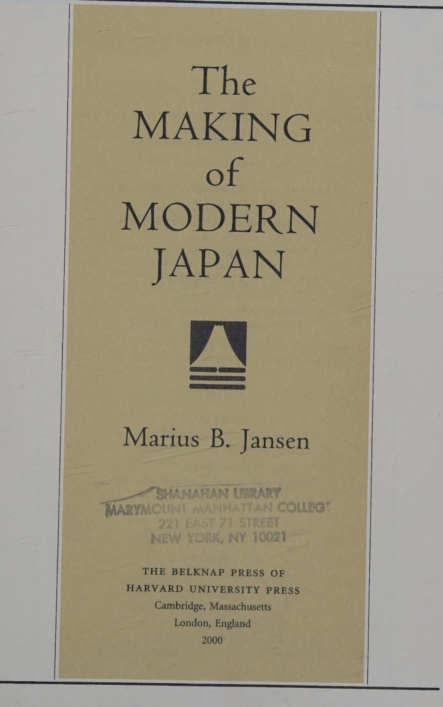
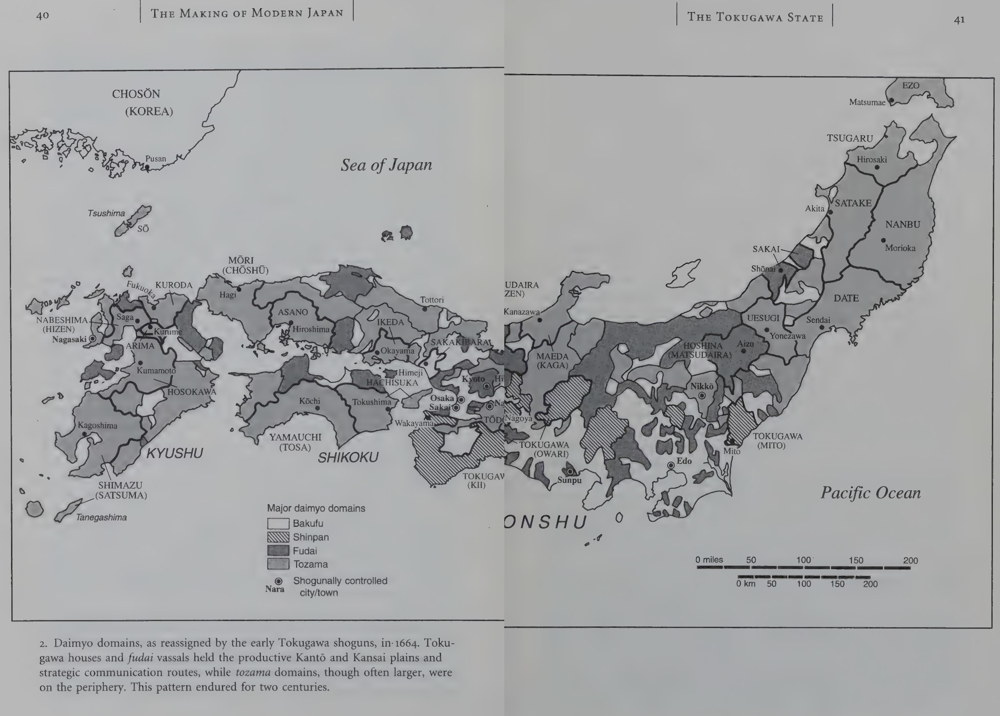
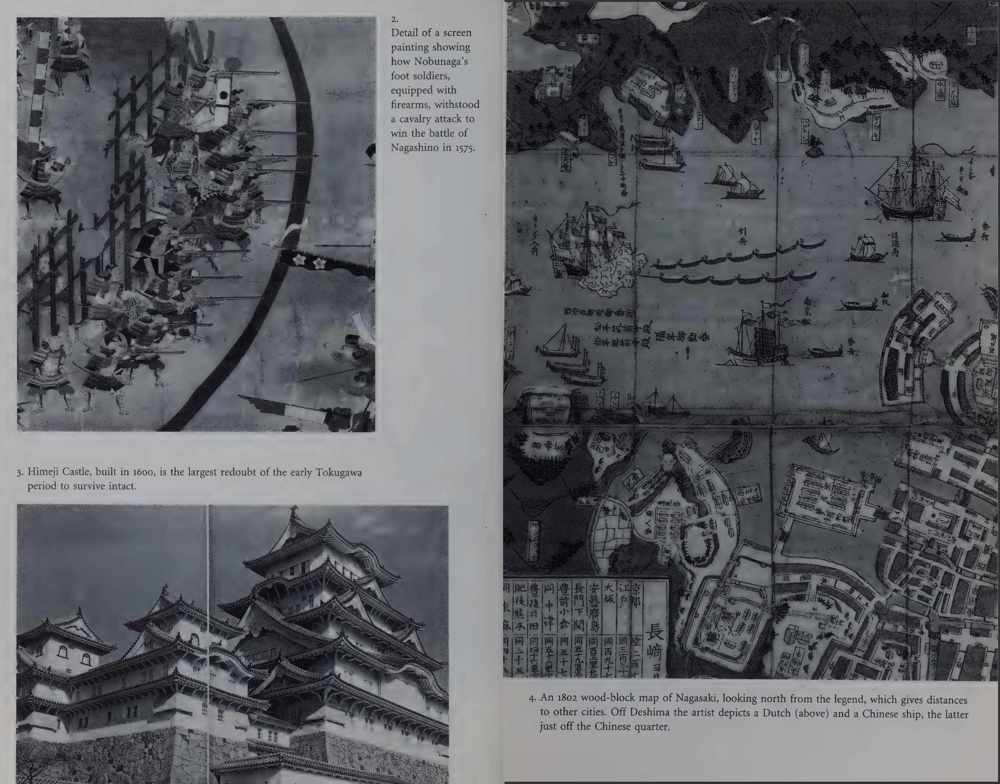
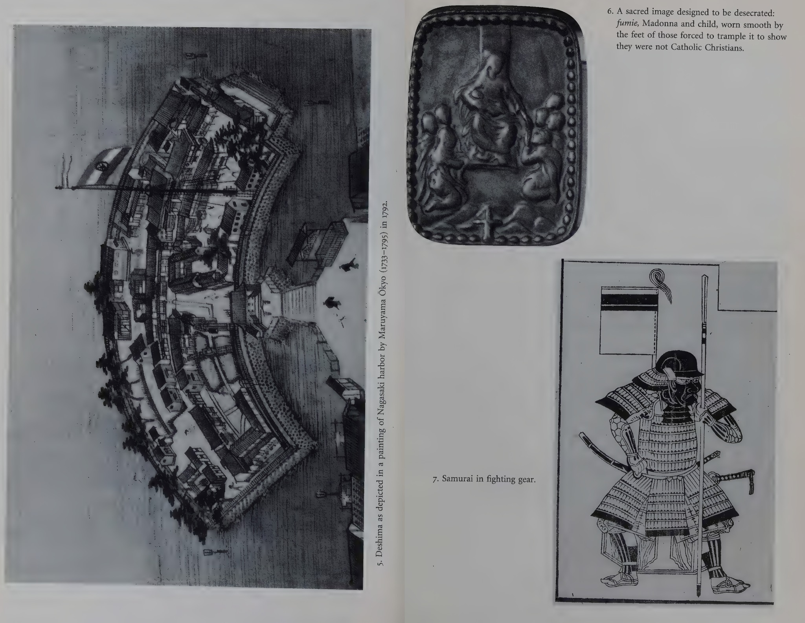
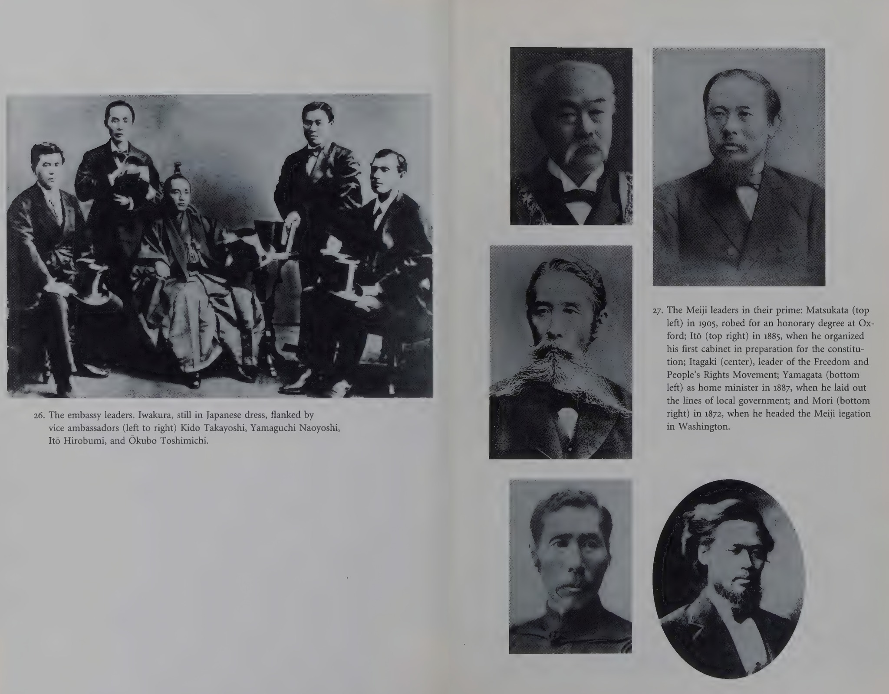
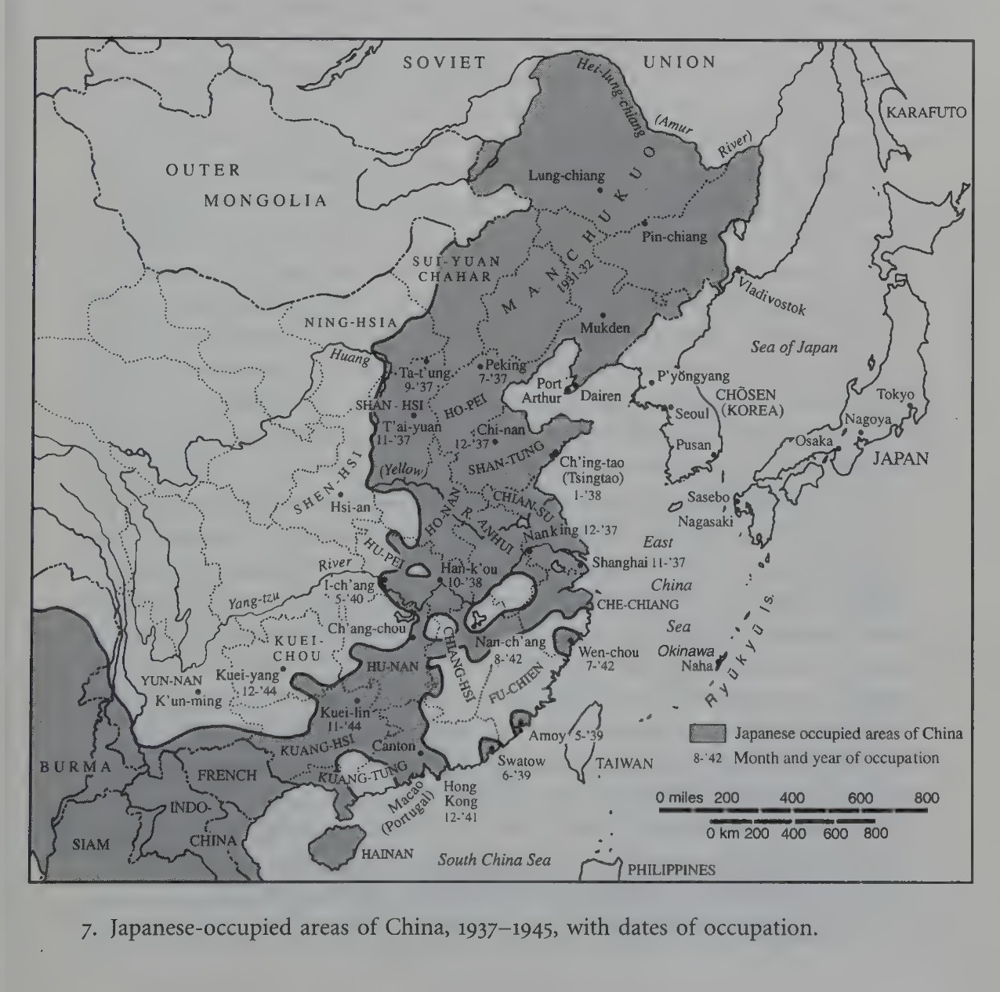
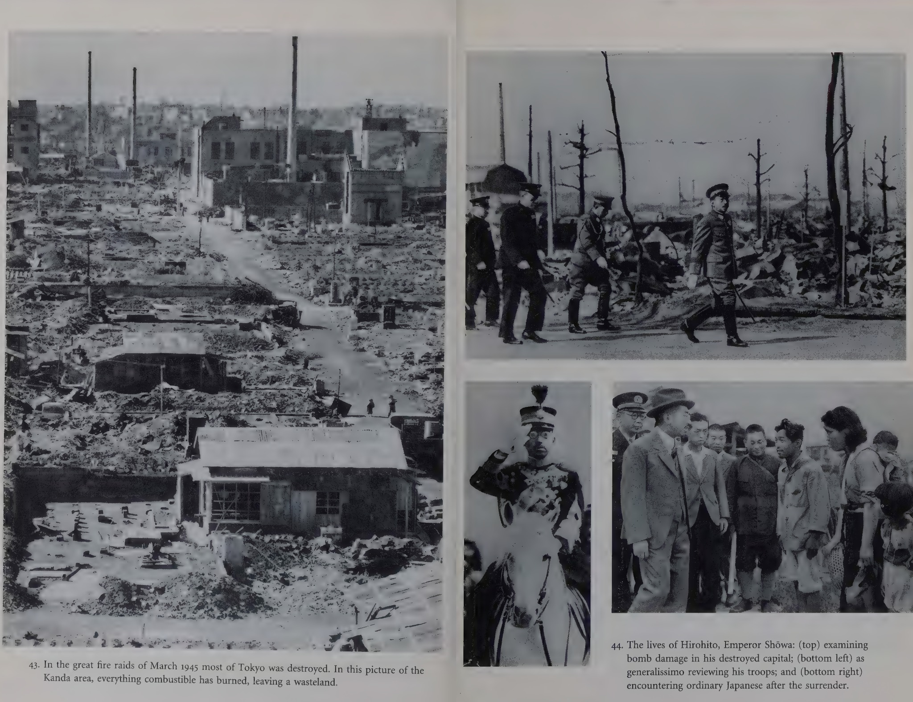

Book Review for Modernization of Japan
The Making of Modern Japan by Marius B. Jansen
Rick Rejeleene
March 7, 2026
1. About the Author
Jansen was an American Historian, who grew up, Vleuten in the Netherlands, moved to live in Johnstown, Rhode Island. He got his Ph.D. in History from Harvard University.
A Comprehensive work with meticulous details. My intention in selecting this work was to understand details about Japanese modernization.
I am maybe, one of the rare Indian, Tamil alive who keeps wondering about both India’s modernization & the state’s modernization?
Primarily, how both can shed its feudal ways and push ahead through socially, politically and economically and join at top ranks of the advanced nations, states. For such a massive modernization question, I draw, eagerly seeking out into pages of history of regions, nations who have let go of their past, became industrialized.

A) Introduction:
In the beginning chapters of this book delves into stories of Oda Nobunaga, Toyotomi Hideyoshi and Tokugawa Ieyasu, considered as unifier’s of Japan. The Battle of Sekigahara which took place in 1600, considered to be the most important, bloodiest battle in Japanese history, where Tokugawa Ieyasu came out victorious. Following the Victory, Tokugawa shogunate was established and it lasted until 1868.
Jansen goes into meticulous details about how Bakufu (幕府) was structured during Tokugawa shogunate. After Battle of Sekigahara, Japan was administered through military Government. It was carefully controlled using ranking of lords and layered authority, where elites were ranked to each other, and monitored. The system created peace and vast social hierarchy. While daimyo (feudal) lords had their own territory, the shogun was supreme over all of them.
B) Tokugawa shogunate
During Tokugawa shogunate years, Edo (Japan) became the central nerve of the country. The villages, towns were castle town, great cities were depended upon each other, travelers carried goods, stories, ideas, habits between the provinces of Japan. Teachers, scholars, artists, and craftsmen circulated between the towns. Literacy spread top down, the Samurai who were fighters, were expected to master letters.

C) The Brief Modernization of Japan
In terms of modernization, it was an external shock to Japan through Perry that made Japan come out of seclusion (Sakoku) policy. I was wondering why Perry would go in the first place and force Japan to open. For example, no Indian would force the Sentinelese tribe to open up their tribe, and ask them to trade.
- Perry needed protection for American Whalers They were frequently captured, executed, upon shipwrecking on Japanese shores
- Perry needed coaling stations for American steamships
- Trade expansion, Japan was a new market
- Establish Diplomatic relations between Japan and the Western Great Powers
Perry was authorized with Gunboat diplomacy by U.S. President Millard Fillmore.After Perry’s visits, Since 1860s-1878, Japan entered period of crisis. The crisis was constant humiliation, dragged into foreign demands, security issues.
Abe Masahiro was the head of the bakufu Senior Council (rōjū). As Shogun Tokugawa Ieyoshi lay incapacitated, Abe had to make crucial decisions alongside other adviser. They reluctantly acceded to Perry’s demands to open Japan’s ports, marking the first breach in the country’s two-century-old isolation policy.


D) Early formation of Meiji Era
It was 1862, the turning point with the Bunkyū reforms, which Tokugawa government carried out after Ii Naosuke’s assassination. Afterwards, li Naosuke, the powerful tairō (Elder) who signed the 1858 Harris Treaty with the United States, carried out political repression to stabilize, only to get assassinated. In 1867, Prince Hitotsubashi Keiki ( 1837 –1913) surrendered the governing office to Emperor Meiji.
The surrender created replacement government. He was the last Tokugawa shogunate of Japan. Together as Kido Takayoshi, Saigō Takamori and Ōkubo Toshimichi orchestrated Japan’s Meiji Restoration in 1868. Immediately, the Boshin War erupted days later which lasted until 1869.
Many Samurai such as Saigō Takamori (Satsuma), lead rebellion, Boshin War (1868–1869) to orchestrated Meiji Restoration.
Kido (from Chōshū) drafted the Charter Oath, promoting modernization, Saigō and Ōkubo (both Satsuma) handled military and administrative pushes. Ōkubo Toshimichi exemplified pragmatic leadership, centralizing power through han abolition in 1871, dismantling Japan’s feudal order.
All died within a year: Saigō in 1877 battle, Kido from illness, Ōkubo assassinated in 1878. During the Meiji Era, Japanese people and government destroyed Castles that were part of the Tokugawa Shogunate, in order to modernize and westernize Japan and break from their past feudal era of the Daimyo and Shoguns.
The new Meiji Leadership had the famous pledge, “knowledge shall be sought throughout the world. The newly minted Meiji leadership institutionalized representative form, with destruction of the samurai and daimyo class, educational reforms and a representative political system. It absorbed imperialistic ambitions as well, stressing State Shinto and emperor-centered nationalism with an aggressive military class. The Meiji Leadership had a burning desire to be part of Great powers.
E) First Sino-Japanese War
Meiji Japan provoked the First Sino-Japanese War (1894–1895). Foreign Minister Munemitsu Mutsu (1844–1897) was the key Japanese figure orchestrating provocation in 1894. As top diplomat under Prime Minister Itō Hirobumi, he exploited the Tonghak Rebellion to force war.
Tonghak Rebellion (Donghak Peasant Revolution) was a massive 1894–1895 uprising by impoverished Korean peasants against corrupt Joseon officials. First Sino-Japanese War took over in Korea, Manchuria in China.
China responded to the Tonghak Rebellion by sending troops to Korea first, triggering Japan’s counter-move. Japan defeated Qing forces in Korea and then advanced into Qing territory, occupying the Liaodong Peninsula. Korea was under Japanese influenced, formally annexed by 1910. The Qing Dynasty weakened and collapsed in 1911. The conflict resulted in a decisive Japanese victory in 1895. Asian power shifted from Qing China to Japan.
The Russo-Japanese War (1904) made Japan a Great Power, inspired admiration across the world, strengthened emperor-centered nationalism, and fed a new warrior ideal, but it also came at terrible human and financial cost, and the disappointment after peace helped produce anger and riots at home
F) Empire of Japan’s Architects
Itō Hirobumi (1841–1909) was the central architect drafting the 1889 Meiji Constitution. He was heavily influenced by Prussian, German constitutional-monarchy model. He studied Prussia, studied Otto Von Bismark’s way of political management. He imitated Bismarck constantly; Itō was later chided for mimicking Bismarck’s mannerisms.
Yamagata Aritomo, Meiji-era military leader, He was twice Prime Minister of Japan. He spearheaded military modernization as War Minister, establishing a conscript army in 1873 that replaced samurai privileges with universal service. This created a national force modeled on Prussian standards, enabling victories like the Sino-Japanese War.
Matsukata Masayoshi, as Finance Minister from 1881. He was Prime Minister of Japan from 1891 to 1892. He tackled inflation from wartime spending by enforcing deflation, redeeming paper money, founding the Bank of Japan in 1882, and privatizing state industries. His land tax reform shifted payments to cash at 3% of assessed value, stabilizing finances but causing rural hardship.
Inoue Kaoru, Foreign Minister in the 1870s-1880s, negotiated unequal treaty revisions, promoted Western diplomacy, and advanced industrialization via trade policies. He balanced isolationism with engagement, aiding Japan’s equal footing with powers by the 1890s.

G) Taishō era (1912–1926)
As Japan further progressed, it entered into Taishō era (1912–1926). This was the time period of Emperor Taishō. In this era, the political power moved to imperial from Meiji era’s statesmen to imperial diet (elected representatives) called as Taishō Democracy. Cabinets became increasingly controlled by party leaders rather than military. Taishō emphasized individuality over rote learning and reformers pushed progressive methods, expanding access to middle schools and universities, boosting literacy to near 100% by 1920s.
Taishō era had greater higher education reforms. Tokyo Imperial University’s Law Faculty became the center of Japan’s elite training ground for leaders during the Taishō era (1912–1926), which was modeled after German Universities. It featured specialized “chairs” led by professors with assistants handling much teaching. Its students made up about one-third of Japan’s total university enrollment.
Graduates dominated government ministries, blending merit-based exams for entry with privilege-by-alumni-network for advancement. Professors enjoyed funding, study abroad, and dual roles as academics and policy advisors.
H) Second Sino-Japanese War, Pacific War and WW2
Colonel Seishirō Itagaki, Lt. Colonel Kanji Ishiwara were active Kwantung Army staff officers in 1931. They planned the provocation, believing Manchuria’s resources were vital for Japan’s survival and Japan launched Second Sino-Japanese War, 1937–1945. While Prime Minister Wakatsuki Reijirō tried to restrain the army leaders, his cabinet fell and was replaced by pro-army leaders.
Japan’s descent into the quagmire, as it is rightly called, of the China War was neither expected nor desired by Tokyo. While Tokyo groped for ways to end the war, the field armies carried on in China, looking for an enemy to defeat or a mission to carry out. By the end of 1938 most major cities in China had fallen into Japanese hands.
The Militarism and the China, Pacific wars were the self-destruction of imperial Japan and its defeat and occupation shattered that order, with the destruction, paved way for postwar reconstruction created a new Japan that traded empire for economic power.

I) Yoshida Era (1878–1967)
Shigeru Yoshida (1878–1967) was Japan’s master diplomat-turned-postwar Prime Minister. Between 1946 and 1953 Yoshida Shigeru (1878–1967) organized five cabinets and more than any other political leader in modern Japan. With the exception of a period in 1947–48, he occupied. With the exception of a period in 1947 to 48, he occupied the post of prime minister during a time of wrenching political and social change.
Yoshida government’s focus was on the dismantling of militarism and the adoption of new, democratic, and pacifist structures
As the Cold War intensified and Communist victory in China became likely, U.S. policy shifted from restraining Japan to rebuilding it. Recovery planning moved toward production, stabilization, and later the Dodge mission, while American and Japanese priorities increasingly converged.
Japan regained sovereignty, but under unusual conditions: American forces stayed, Japan accepted a security treaty, and its room to set an independent foreign policy was limited. From Yoshida’s conservative perspective, however, this was a bargain worth making.
Japan could keep rearmament low, concentrate on recovery and growth, trade again on favorable terms, use a competitive exchange rate, gain access to the American market, and absorb foreign technology. That is basically Jansen’s explanation of the postwar formula: limited sovereignty in security matters in exchange for an environment highly favorable to economic recovery.
J) Post-War Japan
The San Francisco Treaty of Peace came into force in 1952. Politically, the 1955 system was built on conservative dominance, a divided left, electoral management, and a strong rural base for the LDP. The Socialists had moments of strength, but anti-Communism, the Korean War, and economic recovery weakened the radical challenge. Japan gained access to U.S. markets, capital, and technology, importing over 40,000 American industrial technologies between 1951 and 1980.
The Yakuza had roots in Tokugawa society, when samurai authorities permitted limited autonomy to these organizations in return for outward submission to government control and order. In prewar Japan, they developed close ties with right-wing nationalist and political organizations, and frequently benefited from the favor of the military, who found their jingoistic chauvinism useful in cowing critics.

K) Conclusion
Economically, Jansen describes a developmental state model, the Ministry of Finance helped allocate capital, the Japan Development Bank and MITI guided industry, high savings were encouraged, cartels and cooperation were tolerated, and a triangular relationship grew among business leaders, conservative politicians, and bureaucrats.
This was not pure laissez-faire capitalism; it was organized growth. Japanese began to think of themselves as economic leaders of Asia. Bookstores reflected what many called the “Asianization” of Japan. By the 1980s, Japan had surpassed dependence on imported know-how and had become a global technological competitor.
As Fukuzawa Yukichi’s call to his countrymen to “part with Asia” and embrace Europe, finally became obsolete as Japan had fully modernized. Fukuzawa concluded that Asia was declining because it resisted modernization and clung to old institutions.
In conclusion, Japan’s society has shown enormous resilience and strength in the past millennium. A thousand years ago the court society of Lady Murasaki’s Tale of Genji was giving way to that of warriors whose rule was fastened on the country for eight hundred years. The Meiji revolution disarmed those samurai and armed the state instead. The new Meiji empire flourished briefly, but in defeat that state was itself disarmed. Reconstruction brought enormous economic influence and power, but that structure too was not immune to cyclical decline.